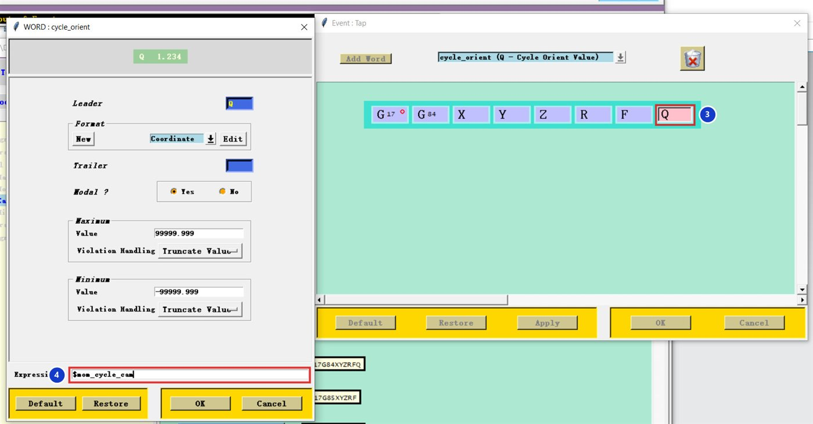
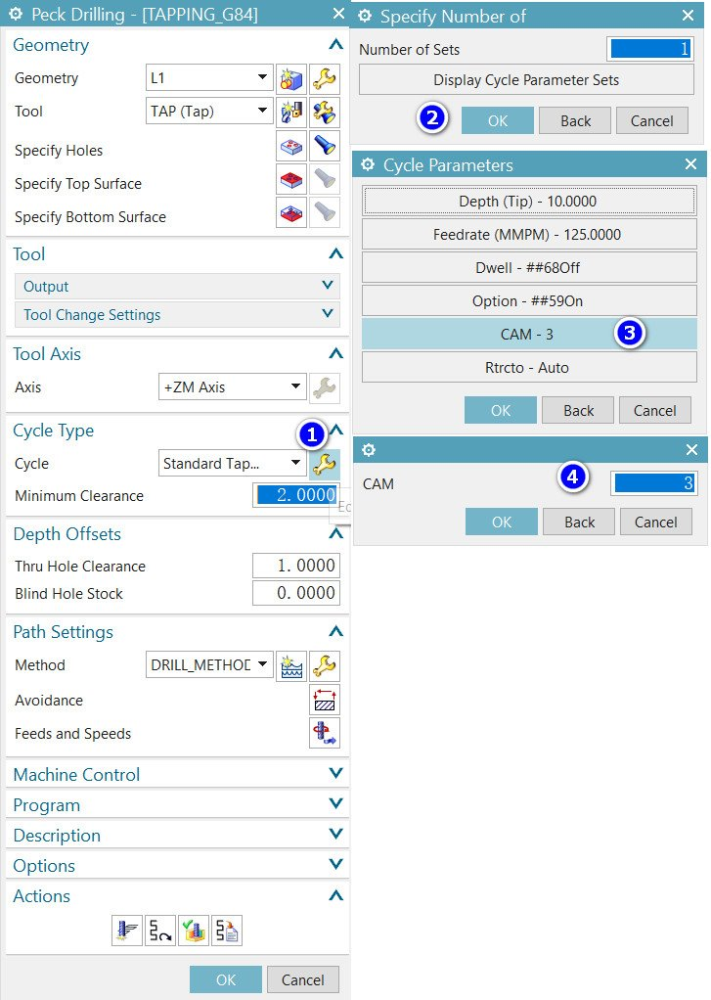

Kết quả
N1T18M6
G0G90G54X0Y0
G43H18Z50.M8
S100M3
G84Z-12.R2.F125.Q2.
X50.
G80Tải về: file NC mẫu để so sánh.
Phần 1 — trong Post Builder
01Thêm từ Q vào chu trình Tap, Expression =
Thêm từ Q vào chu trình Tap, Expression = $mom_cycle_cam
Canned Cycles → Tap: thêm từ Q vào cuối khối 3, chuột phải → Edit, ô Expression 4 nhập:
$mom_cycle_cam

Phần 2 — trong NX CAM
01
Nhập Q vào ô CAM của chu trình
Mở nguyên công taro → Cycle Type, bấm cờ lê 1 → OK ở Number of Sets 2 → chọn CAM 3 → nhập chiều sâu mỗi lần ăn 4.


Kiểm tra F khi taro
Ở chế độ G94 (mm/phút), F phải bằng S × bước ren: S100 × 1.25 = F125.. F sai sẽ làm gãy taro. Taro cứng (M29, G95) có trong post ThanhCAM.
Q trên máy của bạn
Không phải mọi bộ điều khiển đều hiểu Q trong G84 (Fanuc cần tham số taro bẻ phoi/peck tapping). Thử trên một lỗ trước.